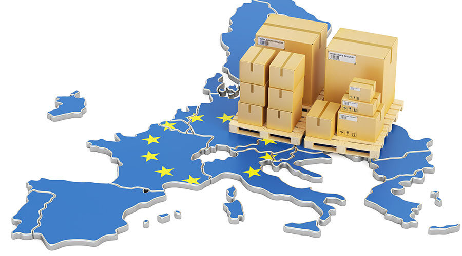
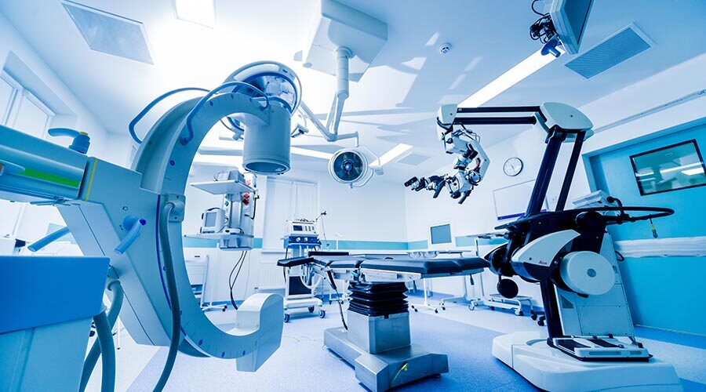
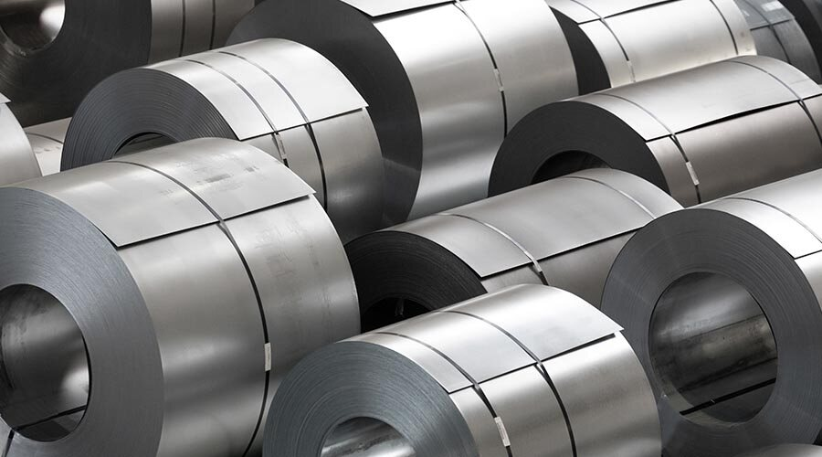
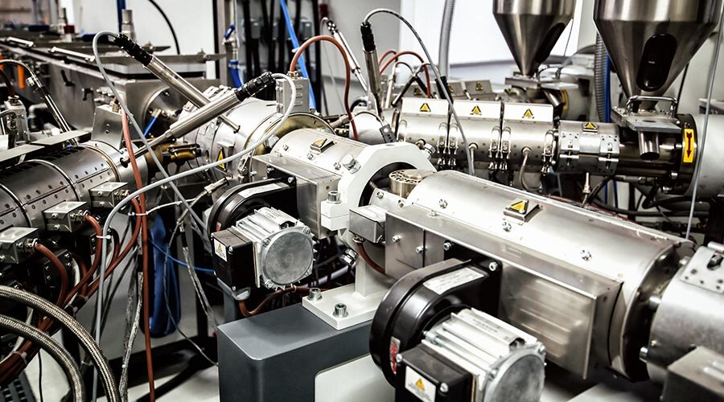
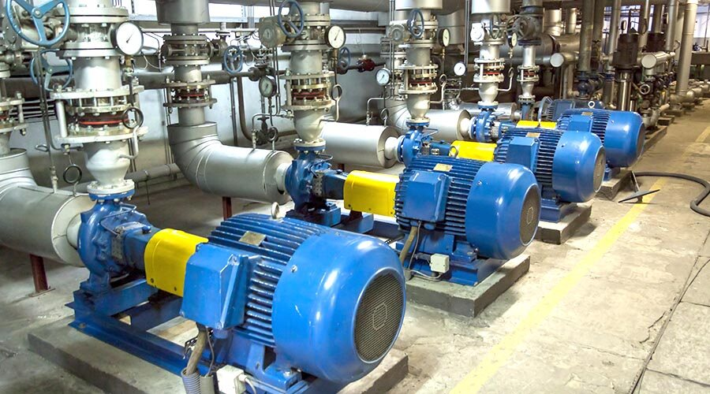
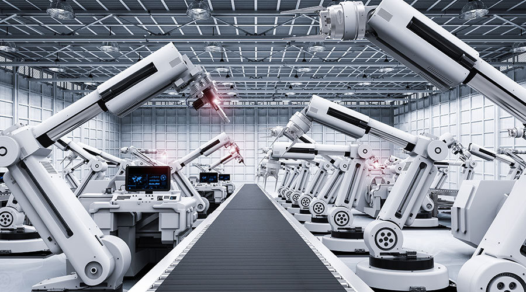
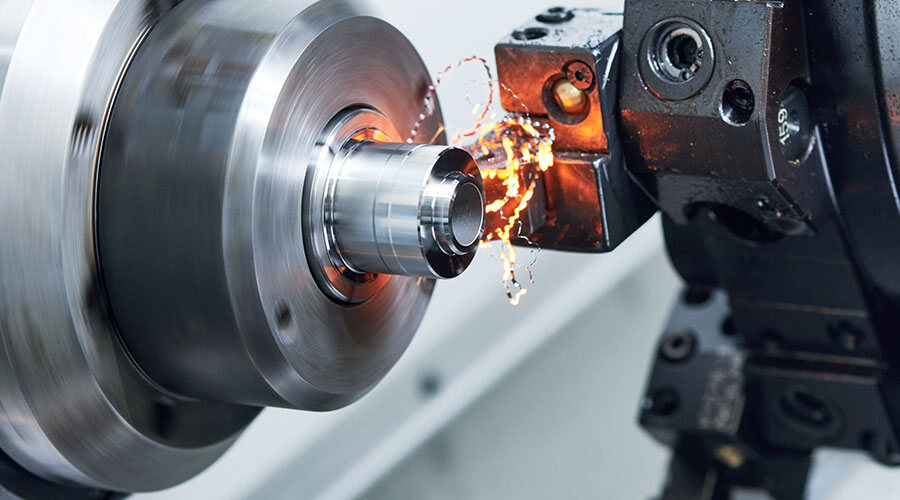

21 Stationen, eine Linie.
Von der Forschung über den Konzern zum Interim Management: 11 Interim-Mandate und 10 Festanstellungen seit 1986, jede mit Ausgangssituation, Maßnahmen und Ergebnissen.
- 2023-2024InterimInterim-Mandat
Projektleiter „Aufbau nachhaltige, klimafreundliche Outbound-Logistik“
Global agierendes deutsches Familienunternehmen · Anbieter von Hygiene-Lösungen für Profis
Budget 10 Mio. EUR

- 2022-2023InterimInterim-Mandat
Head of Supply Chain / Operations (Einkauf, SCM, Verpackungsplanung, Produktion & Logistik, QM)
Global agierendes deutsches Familienunternehmen · Pharmazie und Kosmetik
Budget 100 Mio. EUR · Personal 300

- 2022InterimInterim-Mandat
Fachbereichsleiter Logistik / Zentrallager Europa (Restrukturierungsprojekt)
Global agierendes deutsches Familienunternehmen · Metallverarbeitung und Maschinenbau
Budget 10 Mio. EUR · Personal 80

- 2021InterimInterim-Mandat
Beratung Outbound Logistik EMEA bei einem global agierenden US- Unternehmen, Private Equity, der Chemie-Branche
Global agierendes US- Unternehmen, Private Equity · Chemie
Budget > 10 Mio. EUR · Personal > keine
- 2017-2019InterimInterim-Mandat
External Executive Interim Manager / Leiter Logistik EMEA
Global agierendes, börsennotiertes US-Unternehmen, Europa · Chemie
Budget >100 Mio. EUR · Personal >400 MA

- 2016InterimInterim-Mandat
External Executive Interim Manager/Leiter Einkauf bei einem Fachhändler aus der Medizintechnik
Fachhändler · Gesundheitsbranche/ Medizintechnik (DE)
Budget 2 Mio. EUR · Personal 6 MA

- 2014-2015InterimInterim-Mandat
External Executive Interim Manager bei einem Systemlieferanten für Regenerative Energien I
Amerikanischer Konzern, Börsennotiert, Europa · Systemlieferant, auch im Bereich Regenerative Energien
Umsatzverantwortung 200 Mio. USD

- 2011-2013InterimInterim-Mandat
External Executive Interim Manager bei einem Systemlieferanten für Regenerative Energien II
Amerikanischer Konzern, Börsennotiert, Europa · Systemlieferant, auch im Bereich Regenerative Energien
Budget 40 Mio. USD · Personal 400 MA

- 2010-2011InterimInterim-Mandat
Leitung Einkauf bei einem global agierenden, börsennotierten Maschinenbauunternehmen im Bereich Regenerative Energien
Global agierendes, börsennotiertes Maschinenbauunternehmen, Nord Deutschland · Regenerative Energien (DE)
Budget 12 Mio. EUR · Personal 60 MA

- 2009InterimInterim-Mandat
Leitung der weltweiten Logistik bei einem Automobilzulieferer, Tier 1, für Systemkomponenten
Automobilzulieferer, Tier 1, NRW · Systemkomponenten (DE)
Budget 10 Mio. EUR · Personal 100 MA

- 2008-2009InterimInterim-Mandat
Leitung Einkauf bei einem Automobilzulieferer, Tier 2-3, für Stahlprodukte
Automobilzulieferer, Tier 2-3, NRW · Stahlprodukte (DE)
Budget 2 Mio. EUR · Personal 6 MA

- 2005-2007FestanstellungFestanstellung
Director Supply Chain Management Europe / Leiter Restrukturierungsprojekt bei Sterling SIHI
Sterling SIHI GmbH, Ludwigshafen · Pumpenhersteller (DE)
Budget 2 Mio. EUR · Personal 15 MA

- 2001-2005FestanstellungFestanstellung
Projektleiter SHAPE bei der BASF AG
BASF AG
Budget 1,0 Mio. EUR · Personal 250 MA
- 1999-2002FestanstellungFestanstellung
Gruppenleiter und Global Lead Buyer „Machinery“ und Projektleiter „eProcurement BASF-Gruppe“
Budget 2 Mio. EUR · Personal 35 MA

- 1999FestanstellungFestanstellung
Leiter des Projekts „Procurement Verbund“ bei der BASF AG
BASF AG
Budget 10 Mio. EUR · Personal 300 MA
- 1998-1999FestanstellungFestanstellung
Gruppenleiter Einkauf „Pumpen und Armaturen“ bei der BASF AG
BASF AG
Budget 1,5 Mio. EUR · Direct Reports 10 MA

- 1997-1998FestanstellungFestanstellung
Leiter Projektgruppe Werkslogistik Ludwigshafen bei der BASF AG
BASF AG
Budget 1 Mio. EUR · Direct Reports 6 MA
- 1997FestanstellungFestanstellung
Seniorberater/Projektleiter bei der BASF AG
BASF AG

- 1993-1997FestanstellungFestanstellung
Leiter Bereich Materialflusssysteme und „Asien-Beauftragter“ bei der Fraunhofer Gesellschaft
Fraunhofer Gesellschaft (FhG), Dortmund · FhG: IML (Institut für Materialfluss und Logistik) (DE)
Budget 8,00 Mio. EUR · Personal 65 MA

- 1987-1993FestanstellungFestanstellung
Geschäftsführer der Mathä Müller GmbH
Mathä Müller GmbH, Eisenbach · Fabrik für Feinmechanik, Metallverarbeitung, Uhrenbestandteile (DE)
Budget einige Mio. EUR · Personal 25 MA

- 1986-1993FestanstellungFestanstellung
Wissenschaftlicher Mitarbeiter an der Universität Karlsruhe (TH): IFK Fördertechnik
Universität Karlsruhe (TH): IFK Fördertechnik, Karlsruhe · Institut für Fördertechnik, heute: Institut für Fördertechnik und Logistiksysteme (IFL) am Karlsruher Institut für Technologie (KIT)


Keine Station in dieser Auswahl.
Lernen wir uns kennen.
Sie möchten mich besser kennenlernen. Gerne stehe ich Ihnen für einen Gesprächstermin zur Verfügung.
Gesprächstermin anfragenHeinrich-Delp-Str. 194
64297 Darmstadt